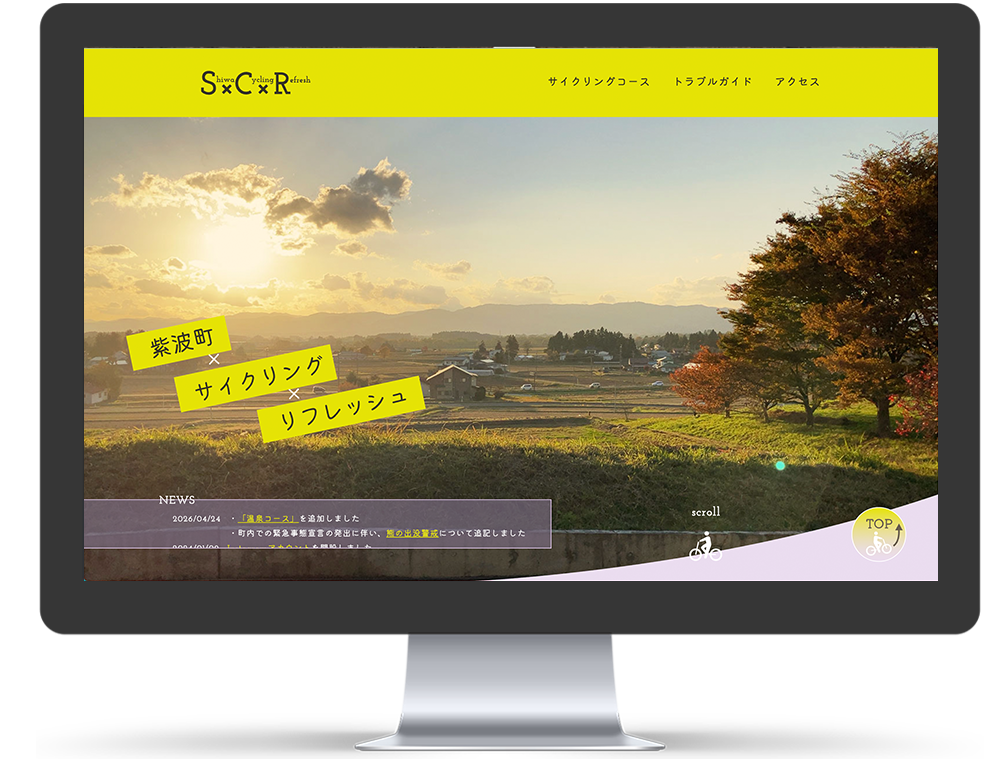
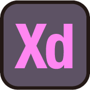
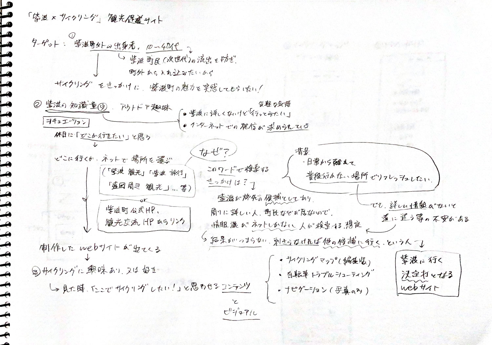
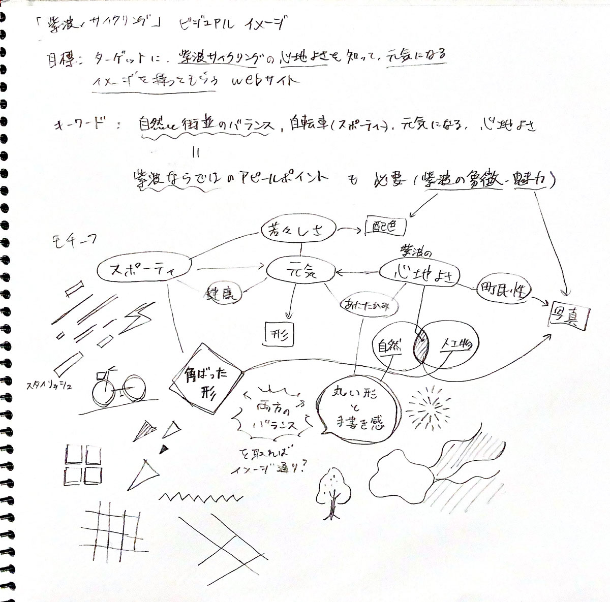
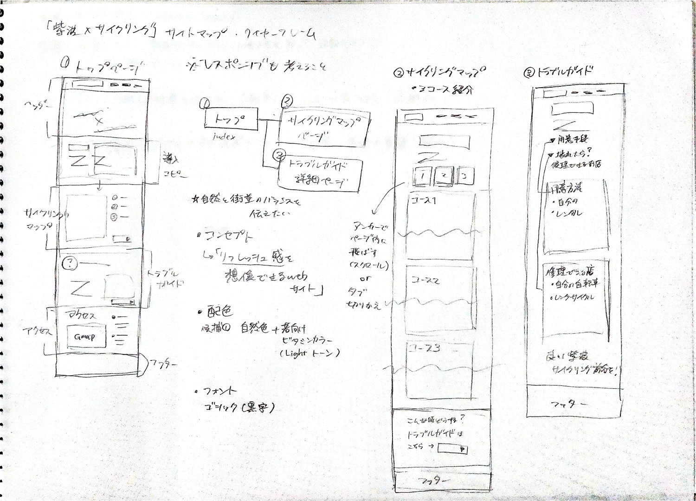
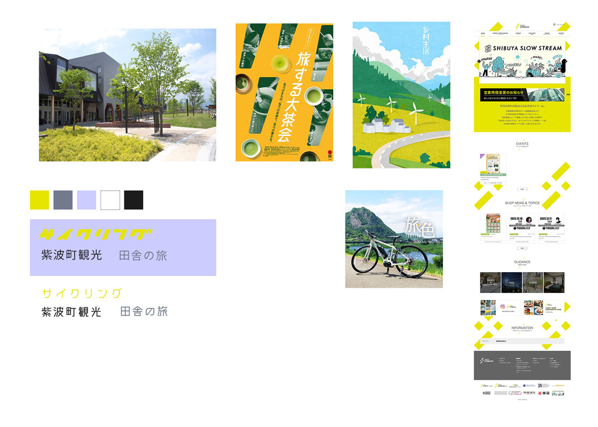
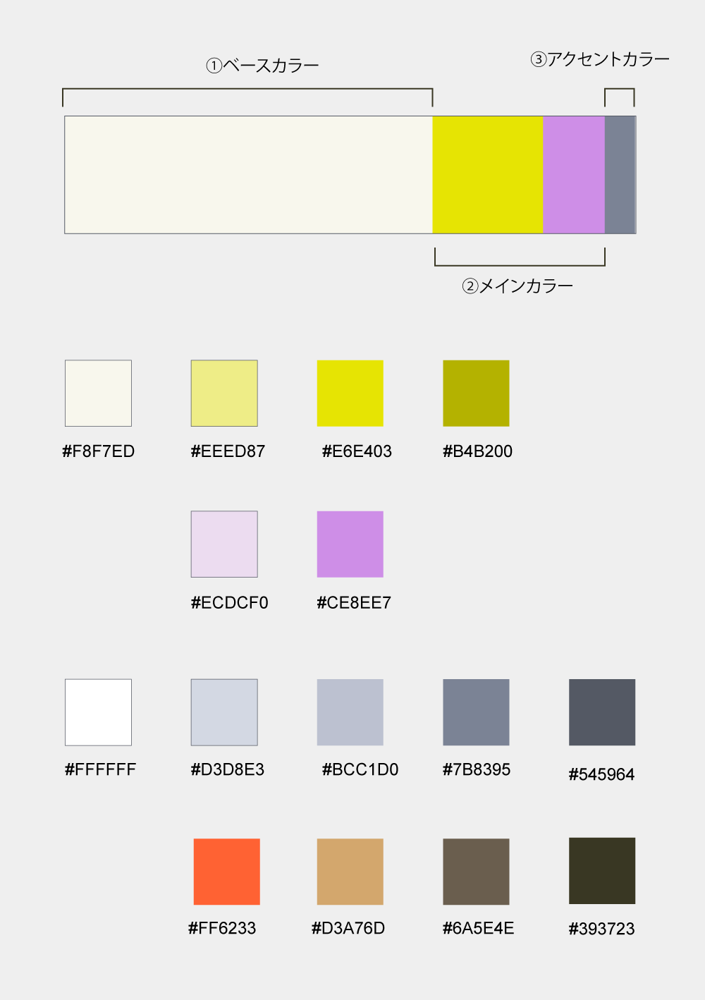
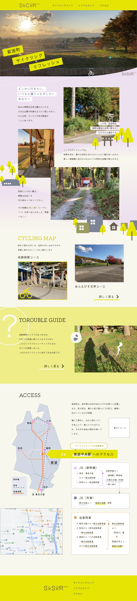
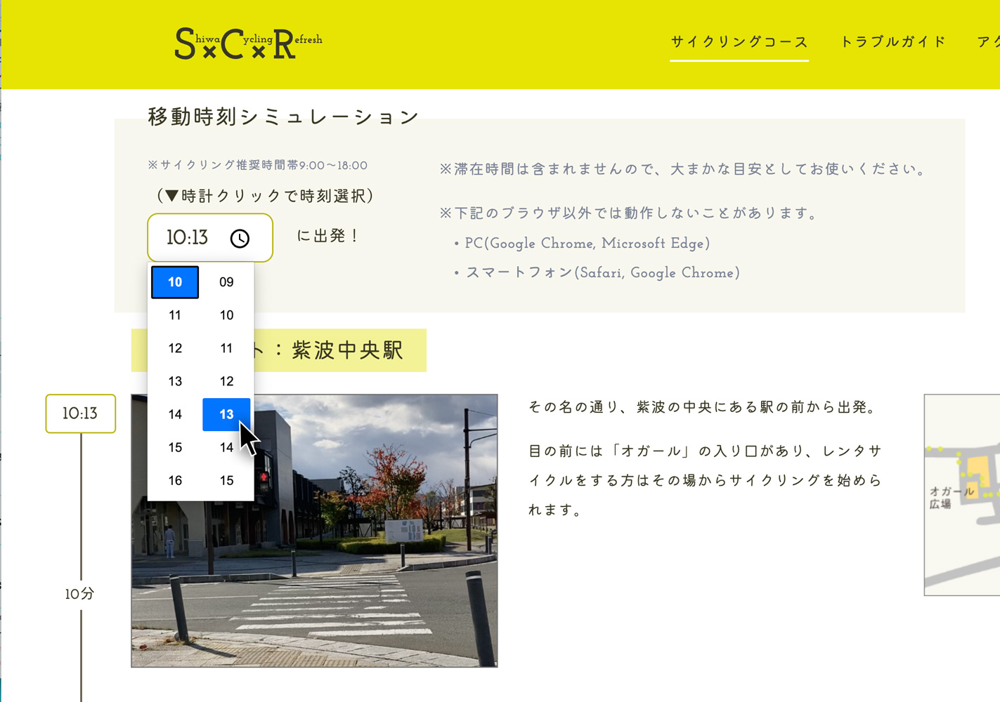

人に行動を促すサイト
S×C×R - 紫波町×サイクリング×リフレッシュ
2学年
卒業研究

- 制作目標
- 効果的な、地域の観光促進PRサイトの制作
- ターゲット
- サイクリングに興味がある、町外出身の10代〜40代の人
- コンセプト
- 普段行かない場所でのサイクリングで、気軽な心機一転を促すサイト
卒業研究の目標として、web制作業務で活用するスキル（効果的なwebデザイン、一通りの制作工程の実行力、プログラミング言語の活用力）の向上を意識した制作に取り組みました。 この町でサイクリングがしたくなるような雰囲気・特別感の表現と、実際に行動させるための実用的なコンテンツの考案に注力しました。
制作過程
1. 制作目標に沿った調査
制作目標の一つの「webサイトの閲覧者に意図した行動を促す」を達成するために、webサイトのテーマを「地元の紫波町とサイクリングを掛け合わせた地域振興」と設定。調査では、町の人口減少や経済縮小の課題から観光振興の必要性、観光客の特徴、町とサイクリングの密接な関係性について詳しく知り、テーマの有力性を裏付けることができました。
▼調査結果の詳細
- 町の課題から観光業注力の必要があるが、コロナ禍から観光客数の推移が低迷している
- 観光客は近隣市町村の来訪者、町の自然環境への注目度が高い、情報取得の機会・交通利便の満足度が低い、といった特徴
- 町内にはサイクリング施設やレンタサイクルの設備があり、自転車競技も盛んで、自転車との関わりが深い
調査結果をもとに目標を整理します。

2. コンセプト・ターゲット設定
調査結果から設定したターゲットは以下の通り。
- 町外出身の10代後半〜40代
- 町の知識（観光スポット・交通の情報など）が少ない
- アウトドア趣味で、サイクリングに興味がある
コンセプトは、「普段行かない場所でのサイクリングで、少し変わったリフレッシュ方法を促すwebサイト」としました。
また、ターゲットに持たせたいイメージを以下の通り設定。
- 特別感のある雰囲気と、わくわくする印象
- 土地と住民のあたたかさや、ゆるやかな町の印象

3. 情報設計（コンテンツ・ビジュアル）
調査に基づき、サイト内に必要なコンテンツを考案しました。
- 紫波町でのサイクリングの魅力を伝えるトップページ
- サイクリングマップコースの案内ページ
- サイクリングの不安を解消させるトラブルガイドページ （実際のサイクリング調査で判明した注意事項、レンタサイクルなどの自転車準備方法、自転車の修理が頼める店舗の紹介）
これらの情報から、ワイヤーフレームを作成。

コンセプトに基づいたイメージボードと、配色設定をまとめます。


4. プロトタイプ制作
3の設定をもとにモックアップをXDで作成しました。（モックアップは「ポイント」の通り）
5.実装・評価
モックアップをもとにコーディングしたものを、オンライン上へ公開。卒業研究発表会にてアンケートを実施したところ、意図通りの印象や満足度が得られ、目標を達成することができました。
ポイント

紫波町らしさを表す黄緑（自然の色）・紫（町のイメージ色）をメインに、活発さと心地よさの両面を表すビジュアルを施しています。
また、実際にサイクリングがしたくなるように、テンポ感のある図や写真の配置を設計しています。
「サイクリングマップ」ページでは、各コースに「移動時刻シミュレーション」機能を設置しており、開始時刻を選択すると各地点への到着時刻が表示される仕組みをJavaScriptで作成しました。
